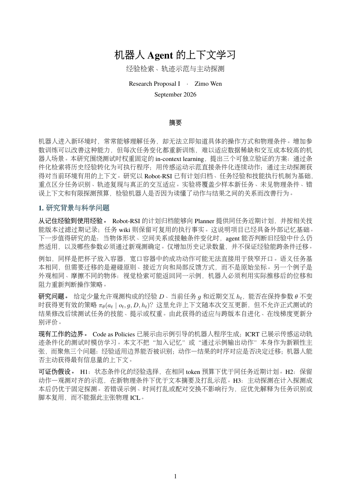

在线预览
上下文学习
上下文学习，第 1 页，共 6 页

这一页暂时未能加载，请重试，或使用上方“打开 PDF”阅读完整文档。
可用页码菜单跳页，或用键盘 ← → 翻页。
下载当前文档 ↓RESEARCH PROPOSALS · SEPTEMBER 2026
早期中文草稿：原方向包含上下文学习。查看最新英文版（底层控制、即时响应、GPT-guided DAgger）→
上下文学习、底层控制与即时响应
三个独立研究方向，每份包含三个技术方案、pipeline、实验设计与预期结果分析。
在线预览
上下文学习，第 1 页，共 6 页

这一页暂时未能加载，请重试，或使用上方“打开 PDF”阅读完整文档。
可用页码菜单跳页，或用键盘 ← → 翻页。
下载当前文档 ↓